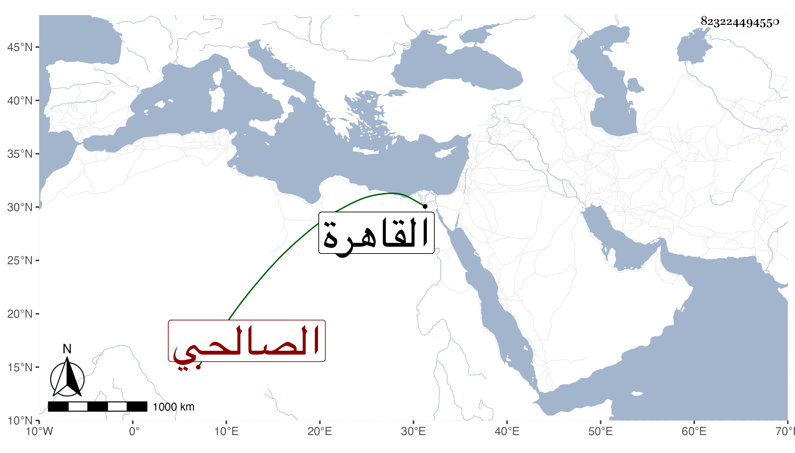

0902Sakhawi.DawLamic.ITO20230111-ara1.EIS1600.823224494550
Biography ID: 823224494550
629
محمد بن سعيد بن عبد الله الشمس الصالحي نسبة للصالح صالح بن الناصر محمد بن قلاون لكون والده وهو عبد أسود مولى لبشير الجمدار مولى للصالح فنسب لمولى مولاه ، ويلقب صاحب الترجمة لسواده سويدان ، قرأ القرآن وكان ذا صوت شجي ونغمة حسنة فصار يقرأ في الأجواق تلاوة ويتردد إلى الطواشية بالقلعة فسمع الظاهر برقوق صوته فأعجبه فرتبه إمامه بالقصر في الخمس مع غيره وجعل له معلوما سنيا ثم أم بولده الناصر فرج بعده وحظي في أيامه بحيث ولاه الحسبة بالقاهرة مدة غير مرة واستمر على الإمامة حتى مات في صفر سنة اثنتين وثلاثين وقد زاد على السبعين . ذكره المقريزي في عقوده وشيخنا في إنبائه وهو آخر الحلية من تلامذة خليل المشبب وممن قرأ مع الززاري وابن الطباخ وكانت بيده مشيخة العلائية .
